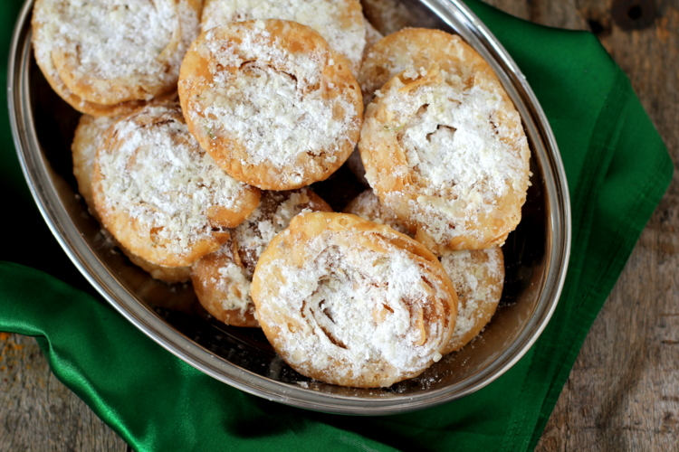

South Indian cuisine deals with many traditional desserts targeted for particular occasions. Chiroti is one such sweet and is mainly made for marriage and brahmopadesham feast.

Ingredients
2 cupchiroti rava / semolina / suji (fine)
2 tbsp butter (softened)
3/4 cupWater
1/4 cupmaida / plain flour (for dusting)
For Satti
1/4 cupbutter (softened)
2 tbsp rice flour
Preparation
firstly, in a large mixing bowl take 2 cup chiroti rava and add 2 tbsp butter.
crumble and mix well making sure the rava is moist.
now add ¾ cup water and start to knead the dough.
knead for 5-8 minutes or until the rava turns soft.
knead really hard adding water (only if required) until the dough turns soft and smooth.
rest the dough for 15 minutes, or until the rava absorbs moisture.
pinch a large ball sized dough and dust with maida.
roll as thin as possible dusting maida if required.
now spread the prepared 1 tsp of saati (butter rice flour paste) uniformly. repeat 5 times.
now roll into log tightly.
cut into 1 inch pieces and press gently.
deep fry in medium hot oil.
drain off the chiorti and keep aside for 10 minutes to drain off the oil completely.
finally, enjoy chiroti by crushing into plate and top with powdered sugar and badam milk.